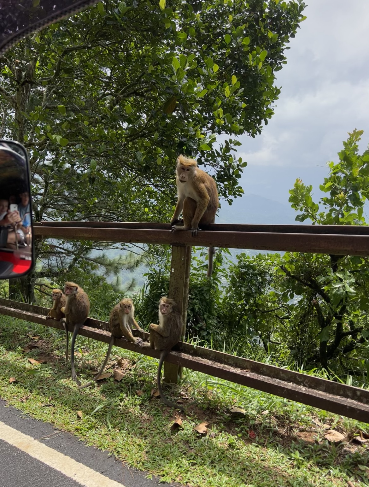
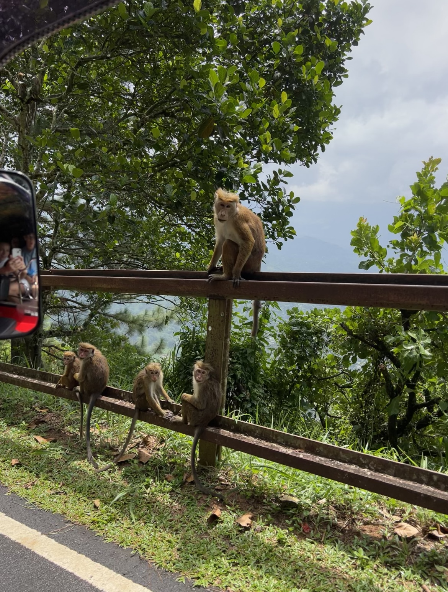

Ella & Kandy

Tijdens mijn eerste weekend in Sri Lanka ben ik met wat vrienden op citytrip naar Ella en Kandy gegaan. Het was een heel vol weekend, maar super leuk. We hebben een safari gedaan, zijn naar tempels geweest en hebben lekker veel en lokaal gegeten. Ze eten in Sri Lanka met hun handen, dus dit werd natuurlijk ook kvan ons verwacht. In het begin voelde dit heel erg raar, maar na een tijdje begon het gelukkig te wennen. Ook was het eten super pittig, maar dit hoort er natuurlijk bij en het is leuk om dat ook een keer te ervaren.
 
